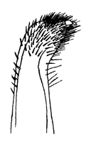

Fiddler Crabs
Uca rhizophorae
Asian Mangrove Fiddler Crab
Type
Information
Photos
Video
Art
References
Species List
Type Description
Uca rhizophorae
Tweedie, M.W.F. (1950) Grapsoid crabs from Labuan and Sarawak.
Sarawak Museum Journal
5(2):338–369.
Information
Subgenus
Tubuca
Common Names
Asian Mangrove Fiddler Crab
Synonyms, Alternate Spellings, & Name Forms
Mesuca (Mesuca) rhizophorae
,
Uca (Deltuca) [acuta] acuta rhizophorae
,
Uca (Tubuca) rhizophorae
,
Uca (Uca) rhizophorae
,
Uca rhizophorae
,
Uca rizophorae
Geographic Range
Indo-West Pacific: Singapore, Malaysia (Sarawak)
Download SVG line map of ranges.
Map data derived from:
Beinlich (1990)
;
Crane (1975)
;
Suzawa
et al.
(1993)
External Links
Encyclopedia of Life
Wikipedia
iNaturalist
GBIF
Photos
No pictures available at this time.
Video
No videos available at this time.
Art

References
Beinlich, B., and H.-O. von Hagen (2006) Materials for a more stable subdivision of the genus
Uca
Leach.
Zoologische Mededelingen
80(4):9–32.
Bott, R. (1973) Die verwandtschaftlichen Beziehungen der
Uca
-Arten (Decapoda: Ocypodidae).
Senckenbergiana biologica
54(4–6):315–325.
Crane, J. (1957) Basic patterns of display in fiddler crabs (Ocypodidae, Genus
Uca
).
Zoologica NY
42:69–82.
Crane, J. (1975)
Fiddler Crabs of the World: Ocypodidae: Genus Uca
. Princeton, NJ: Princeton University Press.
Macnae, W. (1968) A general account of the fauna and flora of mangrove swamps and forests in the Indo-West-Pacific region. Pp. 73–270 in
Advances in Marine Biology
, F.S. Russell and M. Yonge, eds., Volume 6. London: Academic Press.
Salmon, M. (1965) Waving display and sound production in the courtship behavior of
Uca pugilator
, with comparisons to
U. minax
and
U. pugnax
.
Zoologica NY
50:123–150.
Schöne, H. (1961) Complex behavior. Pp. 465–520 in
The Physiology of Crustacea
, T.H. Waterman, ed., Volume 2. New York: Academic Press.
Schöne, H., and H. Schöne (1963) Balz und andere Verhaltensweisen der Mangrovekrabbe
Goniopsis cruentata
Latr. und das Winkverhalten der eulitoralen Brachyuren.
Zeitschrift für Tierpsychologie
20(6):641–656.
Serène, R. (1973) Notes sur quelques especes de brachyoures de Nouvelle-Caledonie.
Cahiers du Pacifique
17:119–161.
Tweedie, M.W.F. (1950) Grapsoid crabs from Labuan and Sarawak.
Sarawak Museum Journal
5(2):338–369.
Tweedie, M.W.F. (1954) Notes on grapsoid crabs from the Raffles Museum, Nos. 3, 4, and 5.
Bulletin of the Raffles Museum
25:118–127.
von Hagen, H.-O. (1970) Zur Deutung langstielger und gehörnter Augen bei Ocypodiden (Decapoda, Brachyura).
forma et functio
2:13–57. {On the significance of elongated and horned eyes in Ocypodid crabs}
{kind=link}